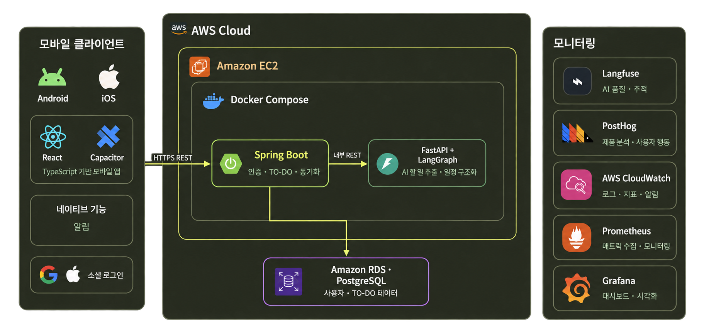

테스트 케이스 통과율
96.59%
198 / 205건 통과
AI 워크플로
모델 선정 및 성능 평가
96.59%
198 / 205건 통과
3.29초
요청 1회 평균 처리시간
3.01원
API 요청 1회 평균 비용
통과 기준 각 사례의 기대 응답, TASK·시간 정보 조건과 7초 이내 처리 기준 충족
동일 평가셋 41건을 5회 반복 실행한 총 205건의 집계 결과. 오류 반환이 정답인 사례 포함.
추천 시스템 고도화 · 개발 계획
할 일을 늘리는 대신,
오늘 가능한 계획을 제안해요.
지금 시작할 작업을 골라드려요
남은 시간을 현실적으로 배치해요
지금 상황에 맞는 기준을 선택해요.
기존 일정과 남은 시간을 고려했어요.
기술 구성
